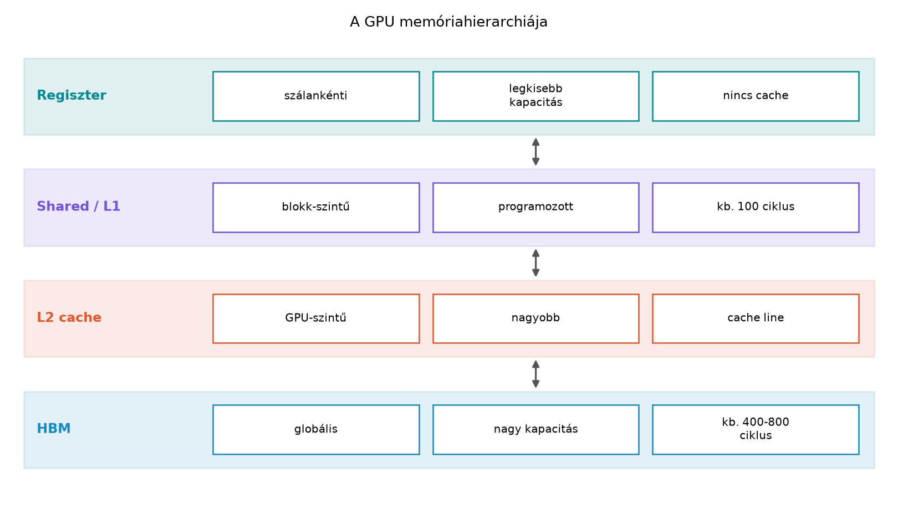

A GPU akkor számol gyorsan, ha a végrehajtó egységeknek nem kell folyamatosan a lassú, nagy kapacitású memóriára várniuk. A memóriahierarchia minden szintjét három kérdés írja le: ki látja, mekkora a kapacitása, és mennyibe kerül elérni. Ebben az alfejezetben ezeket a szinteket járjuk körbe: regiszterfájl, shared memory, L1/L2 cache, valamint a HBM-alapú global memory. A cél nem egyetlen hardvergeneráció számainak bemagolása, hanem az, hogy a kernel memóriaigényét a későbbi fejezetekben önállóan tudjuk becsülni és méréssel ellenőrizni.
A következő táblázat és a példák az NVIDIA A100 (compute capability
8.0) környezetét használják tájékoztató számokkal. A pontos kapacitás-
és késleltetési adatok erősen verzió- és hardverfüggők, ezért minden
mérés előtt a deviceQuery, a gyártói adatlap és a fordító
ptxas -v kimenete alapján ellenőrizni kell.

A gyakorlati GPU-programozásban a leghasznosabb leegyszerűsítés az alábbi rétegmodell:
| Szint | Láthatóság | Példakapacitás (A100 80 GB) | Nagyságrendi késleltetés | Gyakorlati szerep |
|---|---|---|---|---|
| Regiszter | egy szál privát | 64 K db 32 bites regiszter/SM, összesen 256 KB/SM; legfeljebb 255 regiszter/szál | gyakorlatilag az utasításütemezésbe olvad; spill esetén viszont global-lassú | a leggyorsabb munkaterület, a számítás közvetlen operandusainak tárolása |
| Shared memory | egy blockon belüli szálak | 192 KB L1/shared együttes per SM; ebből blockonként legfeljebb 163 KB foglalható le | nagyjából 20–30 ciklus | szoftver által vezérelt on-chip adatterület adat-újrafelhasználáshoz |
| L1 cache | SM-en belüli hardver | 192 KB L1/shared együttes carve-out, a konfigurációtól függően | nagyjából 30–40 ciklus | a global/local hozzáférések automatikus gyorsítótára |
| L2 cache | az egész GPU | 40 MB | nagyjából 200 ciklus nagyságrend | az összes SM közös gyorsítótára, HBM-késleltetés elrejtése |
| Global memory / HBM | device szint | 40–80 GB HBM | nagyjából 400–700 ciklus; nagy sávszélességű burstök | a nagy adathalmazok tényleges tárolója |
Ez a rétegződés azt jutalmazza, ha egy adatot többször használunk egy szűk, gyors szinten, és akkor büntet, ha nagy távolságra, gyakran kell hozzáférni. A későbbi tiling, coalescing és cache-optimalizálási fejezetek mind erre az alapelvre épülnek.
A regiszterek az egyes szálak privát változói. A CUDA-fordító a kernel lokális skalárváltozóit elsősorban regiszterekbe próbálja elhelyezni. Egy A100 SM-en a regiszterfájl mérete 64 K darab 32 bites regiszter, azaz 256 KB. Ez osztozik az SM-en futó összes szál között.
Egy szál legfeljebb 255 regisztert kaphat. Ha a kernel például szálanként 64 regisztert használ és egy block 256 szálból áll, akkor egy block regiszterigénye:
Egy SM-en a regiszterkorlát ekkor legfeljebb
block egyidejű futtatását engedi. Ez fontos korlát: ha csak a szálak számát nézzük, 2048 szál elférne, de a regiszterfájl már 1024 szálnál leállítja az SM-et. Ezt a jelenséget hívják register pressure okozta occupancy-csökkenésnek.
A fordító a ptxas -v kapcsolóval megmutatja a becsült
regiszterhasználatot:
nvcc -O3 -std=c++17 -arch=sm_80 -Xptxas -v kernel.cu -o kernelA kimenetben például ilyen sorok jelennek meg:
ptxas info : Used 12 registers, 0 bytes smem, 400 bytes cmem[0]Ha a kernel több regisztert kérne, mint amennyi elérhető, a fordító
spill-t végez: a regiszterek tartalmát a local
memory-ba teszi. A local memory logikailag szálankénti,
fizikailag azonban a global memory területen él, és az L1/L2 cache
gyorsíthatja. A spill könnyen felismerhető a gyenge teljesítmény és a
st.local/ld.local PTX-utasítások megjelenése
alapján.
Gyakorlati tanulság: a regiszterekkel takarékoskodni kell, de csak addig, amíg a megtakarítás nem okoz spill-t. Ha egy blokk 25%-kal kevesebb regisztert használ, több block fér az SM-re; ha viszont emiatt a fordító local memoryba menekít, a nyereség könnyen elvész.
A shared memory az SM-en belüli, block-szinten látható, kis késleltetésű memória. Nem automatikus cache, hanem szoftver által kezelt scratchpad: a programozó dönti el, mit tesz bele, mikor olvassa, és mikor szinkronizál.
Példakapacitás: az A100-ban az L1 és a shared memory közös 192 KB-os területen osztozik, és a carve-out beállításától függően az SM-en legfeljebb 164 KB shared memory lehet. Egy block legfeljebb 163 KB-ot foglalhat. Egy jellemző launch:
__global__ void scale_shared_kernel(const float* __restrict__ x,
float* __restrict__ y,
float alpha, long long n) {
__shared__ float tile[256];
long long i = static_cast<long long>(blockIdx.x) * blockDim.x + threadIdx.x;
long long stride = static_cast<long long>(gridDim.x) * blockDim.x;
for (; i < n; i += stride) {
tile[threadIdx.x] = x[i];
__syncthreads(); // a tile minden elemének láthatónak kell lennie
y[i] = alpha * tile[threadIdx.x] + y[i];
}
}Itt a tile tömb 256 float méretű, azaz
blockonként 1024 bájt shared memóriát foglal. A
__syncthreads() azt garantálja, hogy a block minden szála
elérte az írást, mielőtt bármelyik szál olvasná a tile elemeit.
A shared memory akkor éri meg, ha az adatot többször
használjuk. A fenti példa rossz példa a shared memory
használatára, mert minden x[i] elemet pontosan egyszer
olvasunk be a tile-ba, majd egyszer olvasunk vissza. A shared memória
itt csak extra szinkronizációt hoz, és legfeljebb annak szemléltetésére
alkalmas, hogy a puszta shared-használat nem gyorsít. Az igazi nyereség
akkor jön, ha például egy stencil vagy mátrixblokk ugyanazt az elemet
többször olvassa.
A shared memória méretét statikusan, például
__shared__ float s[1024]; formában, vagy dinamikusan,
extern __shared__ float s[]; módon lehet megadni. A
dinamikus változatnál a launch harmadik, shared_bytes
paramétere adja meg a tényleges bájtszámot:
scale_shared_kernel<<<grid, block, shared_bytes, stream>>>(...);A static shared memory gyorsan ellenőrizhető, a dinamikus változat pedig olyankor hasznos, ha a blockméretet futásidőben választjuk meg.
A GPU-nak két automatikus cache-szintje is van. Az L1 cache SM-enként, az L2 cache device-szinten van jelen. Mindkettő a global memory felé irányuló forgalmat csökkentheti.
Az A100-ban az L1 és a shared memory közös területen helyezkedik el. Ha egy kernel nagy shared memóriát igényel, a rendelkezésre álló L1 mérete csökkenhet. Ezt a kompromisszumot a carve-out konfiguráció szabályozza. A gyakorlati döntés ezért nem az, hogy „shared vagy L1”, hanem az, hogy mi a fontosabb az adott kernelnek: programozott adat-újrafelhasználás vagy automatikus cache.
Az L2 gyorsítótár az egész GPU-ra kiterjed. Az A100-ban 40 MB, és minden SM számára elérhető. Nagy szerepe van abban, hogy a HBM felé irányuló kérések egy része ne menjen ki a memóriavezérlőhöz. Az L2 egyben az atomi műveletek gyorsításában és a memóriák közötti koherencia nagy részében is fontos.
A cache-ek leghatékonyabban akkor működnek, ha a hozzáférések térben és időben lokálisak. A coalescing fogalma a következő fejezetben részletesen előkerül, de a lényeg már itt is érthető: a GPU memóriarendszere nem egyesével szolgálja ki a 32 szálat, hanem szektorokban és cache-line-okban kéri az adatot. Ha egy warp szálai szomszédos címeket olvasnak, egy tranzakció is elég lehet; ha szétszórtan, akkor több tranzakció keletkezik, és a tényleges sávszélesség drámaian csökken.
A nagy kapacitású, device-szintű memória a modern GPU-kban High Bandwidth Memory. A HBM abban különbözik a hagyományos GDDR-től, hogy a DRAM-lapkákat egymásra rétegzik és mikroáthidalásokkal, úgynevezett through-silicon via-kkal kötik össze. Emiatt sokkal szélesebb busz fér el kis helyen.
A sávszélesség közelítő képlete:
ahol a busz szélessége bitben, pedig az effektív adatsebesség. Egy A100 80 GB-os SXM-változatánál például nagyjából 5120 bites effektív busz és körülbelül Gbit/s adatsebesség körülbelül 2048 GB/s csúcssávszélességet ad. A pontos értéket a gyártói adatlap és a mérési környezet rögzíti.
A HBM több memóriacsatornára bomlik. A memóriavezérlők a címeket csatornák között osztják szét, ezért a jól elrendezett, szomszédos hozzáférések több csatornát párhuzamosan terhelnek, a szétszórt hozzáférések pedig várakozást okoznak. Ezért a global memory sávszélesség kihasználásánál a „több adat kevesebb tranzakcióban” elv legalább annyira fontos, mint a nyers FLOP-teljesítmény.
A global memory a kernel szempontjából a cudaMalloc
által lefoglalt eszközmemória, amelyet kernelből a
__global__ függvényben pointerként érünk el. A host és a
device közötti átvitel ugyanezen a memórián keresztül, jellemzően PCIe
vagy NVLink úton történik, ezért a nagy másolások önálló mérési pontot
jelentenek.
A kernel memórialábnyomát nem elég „bájtban” megadni; a kulcskérdés az, hogy a foglalás hogyan ütközik az SM erőforrás-korlátaiba. A becslés három fő részből áll:
R_thread
regiszter, amelyet a ptxas -v mutat.S_block bájt.G_total bájt,
amely a beolvasott és kiírt tömbökből számítható.Az SM-re helyezhető blockok számát három korlát együttesen határozza meg:
ahol az SM-enként maximális szálszám, a blockméret, az SM regiszterfájljának mérete regiszterben, a shared memória rendelkezésre álló mérete. A tényleges blockszám:
Példaként vegyük a scale_kernel vektorösszegzést, ahol
blockonként 256 szál van, a regiszterhasználat 12, shared memória nincs,
és A100-as SM-en
,
,
KB:
A tényleges érték block, azaz 2048 szál. Az occupancy-t ebben az esetben a szálkorlát határozza meg.
A scale_shared_kernel esetében a shared memória 1024
bájt blockonként. A shared korlát:
tehát továbbra is a szálkorlát 8 blockot enged. A shared használat tehát ebben a kernelben nem csökkenti az occupancy-t, de nem is ad sávszélesség-nyereséget, mert nincs valódi adat-újrafelhasználás.
A labor célja, hogy a becsült memóriaigényt és a mért futásjellemzőket egymás mellé tegye. A környezet a következő laborpélda; a konkrét mezőket mindenkinél a saját eszközéhez kell igazítani.
Laborpélda-környezet (nem ellenőrzött mérés):
| Mező | Érték |
|---|---|
| GPU | NVIDIA A100-PCIe-40GB |
| Compute capability | 8.0 |
| Driver | 545.23.08 |
| CUDA toolkit | 12.3 |
| OS | Ubuntu 22.04.3 LTS |
| Power limit | 250 W |
| ECC | engedélyezve |
| MIG | letiltva |
| Fordító | nvcc 12.3, -O3 -std=c++17 |
A mintakód a scale_kernel-t és a
scale_shared_kernel-t futtatja. A kernel memóriaforgalma
három tömböt érint: x beolvasás, y
beolvasás-módosítás, y kiírás. Így
bájt.
// CUDA C++17
// Fordítás:
// nvcc -O3 -std=c++17 -arch=sm_80 -Xptxas -v lab_memhier.cu -o lab_memhier
#include <cuda_runtime.h>
#include <cstdio>
#include <cstdlib>
#include <vector>
#include <cmath>
#include <algorithm>
#define CHECK_CUDA(call) \
do { \
cudaError_t err = call; \
if (err != cudaSuccess) { \
std::fprintf(stderr, "CUDA error %s:%s:%d: %s\n", \
__FILE__, #call, __LINE__, cudaGetErrorString(err)); \
std::exit(EXIT_FAILURE); \
} \
} while (0)
__global__ void scale_kernel(const float* __restrict__ x,
float* __restrict__ y,
float alpha, long long n) {
long long i = static_cast<long long>(blockIdx.x) * blockDim.x + threadIdx.x;
long long stride = static_cast<long long>(gridDim.x) * blockDim.x;
for (; i < n; i += stride) {
y[i] = alpha * x[i] + y[i];
}
}
__global__ void scale_shared_kernel(const float* __restrict__ x,
float* __restrict__ y,
float alpha, long long n) {
__shared__ float tile[256];
long long base = static_cast<long long>(blockIdx.x) * blockDim.x + threadIdx.x;
long long stride = static_cast<long long>(gridDim.x) * blockDim.x;
for (long long i = base; i < n; i += stride) {
tile[threadIdx.x] = x[i];
__syncthreads();
y[i] = alpha * tile[threadIdx.x] + y[i];
}
}
__global__ void init_y_kernel(float* __restrict__ y, float value, long long n) {
long long i = static_cast<long long>(blockIdx.x) * blockDim.x + threadIdx.x;
long long stride = static_cast<long long>(gridDim.x) * blockDim.x;
for (; i < n; i += stride) {
y[i] = value;
}
}
float measure(const char* name, long long n, dim3 grid, int block,
void (*launch)(const float*, float*, float, long long, dim3, int),
const float* d_x, float* d_y, float alpha) {
// Warm-up
launch(d_x, d_y, alpha, n, grid, block);
CHECK_CUDA(cudaDeviceSynchronize());
cudaEvent_t start, stop;
CHECK_CUDA(cudaEventCreate(&start));
CHECK_CUDA(cudaEventCreate(&stop));
const int repeats = 10;
CHECK_CUDA(cudaEventRecord(start));
for (int r = 0; r < repeats; ++r) {
launch(d_x, d_y, alpha, n, grid, block);
}
CHECK_CUDA(cudaEventRecord(stop));
CHECK_CUDA(cudaEventSynchronize(stop));
float ms = 0.0f;
CHECK_CUDA(cudaEventElapsedTime(&ms, start, stop));
CHECK_CUDA(cudaEventDestroy(start));
CHECK_CUDA(cudaEventDestroy(stop));
double avg_ms = ms / repeats;
double bytes = 3.0 * static_cast<double>(n) * sizeof(float);
double bw_gbs = bytes / (avg_ms * 1e6);
std::printf("%-22s avg_time=%8.3f ms effective_bandwidth=%8.1f GB/s\n",
name, avg_ms, bw_gbs);
return bw_gbs;
}
void launch_scale(const float* d_x, float* d_y, float alpha, long long n,
dim3 grid, int block) {
scale_kernel<<<grid, block>>>(d_x, d_y, alpha, n);
}
void launch_scale_shared(const float* d_x, float* d_y, float alpha, long long n,
dim3 grid, int block) {
scale_shared_kernel<<<grid, block>>>(d_x, d_y, alpha, n);
}
int main() {
const long long n = 1LL << 24; // 16 777 216 elem
const int block = 256;
const size_t grid = static_cast<size_t>(n / block); // n osztható, grid-stride esetén is biztonságos
const float alpha = 2.0f;
const size_t bytes = static_cast<size_t>(n) * sizeof(float);
std::vector<float> hx(n, 1.0f);
std::vector<float> hy(n, 2.0f);
std::vector<float> hy_out(n, 0.0f);
float* d_x = nullptr;
float* d_y = nullptr;
CHECK_CUDA(cudaMalloc(&d_x, bytes));
CHECK_CUDA(cudaMalloc(&d_y, bytes));
CHECK_CUDA(cudaMemcpy(d_x, hx.data(), bytes, cudaMemcpyHostToDevice));
CHECK_CUDA(cudaMemcpy(d_y, hy.data(), bytes, cudaMemcpyHostToDevice));
dim3 launch_grid(static_cast<unsigned int>(grid));
measure("scale_kernel", n, launch_grid, block,
launch_scale, d_x, d_y, alpha);
// Visszaállítjuk y értékét, hogy a második mérés ugyanabból az inputból induljon.
init_y_kernel<<<launch_grid, block>>>(d_y, 2.0f, n);
CHECK_CUDA(cudaDeviceSynchronize());
measure("scale_shared_kernel", n, launch_grid, block,
launch_scale_shared, d_x, d_y, alpha);
CHECK_CUDA(cudaMemcpy(hy_out.data(), d_y, bytes, cudaMemcpyDeviceToHost));
float max_err = 0.0f;
for (long long i = 0; i < n; ++i) {
max_err = std::max(max_err, std::fabs(hy_out[i] - 4.0f));
}
std::printf("max_absolute_error=%g (FP32, alpha=%g)\n", max_err, alpha);
CHECK_CUDA(cudaFree(d_x));
CHECK_CUDA(cudaFree(d_y));
return 0;
}A kernel launch alakja:
scale_kernel<<<65536, 256>>>
scale_shared_kernel<<<65536, 256>>>A két kernel becsült memóriaigénye:
| Jellemző | scale_kernel várt |
scale_shared_kernel várt |
|---|---|---|
| Regiszter/szál | 8–12 | 10–14 |
| Shared memória/block | 0 B | 1024 B |
| Global forgalom | B | B |
| Occupancy | 2048 szál/SM, 8 block | 2048 szál/SM, 8 block |
| Várt sávszélesség A100-PCIe-40GB esetén | a csúcs nagyjából 70–85%-a | hasonló vagy kissé alacsonyabb |
A sávszélesség-mérést a fenti labor méri. A mérési naplóban külön kell feltüntetni a becslést és a mért értéket, például:
| Eredmény | Várt | Mért (a laborban kitöltendő) |
|---|---|---|
scale_kernel hatékony sávszélesség |
1100–1300 GB/s | <saját mérés> |
scale_shared_kernel hatékony sávszélesség |
hasonló vagy kisebb | <saját mérés> |
scale_kernel regiszter/szál |
8–12 | <ptxas -v nélkül> |
scale_shared_kernel shared/block |
1024 B | <ptxas -v> |
A pontos regiszter- és shared-értékek meghatározásához az Nsight Compute futtatható:
ncu --metrics launch__registers_per_thread,launch__shared_mem_per_block,sm__warps_active.avg.per_cycle_active,dram__bytes_read.sum,dram__bytes_write.sum ./lab_memhierA dram__bytes_read.sum és a
dram__bytes_write.sum metrikák azt mutatják, hogy a valós
HBM-forgalom mennyire közelíti a becslést. Ha a
scale_shared_kernel mért sávszélessége nem jobb, mint a
scale_kernel-é, az nem meglepetés: a shared memória itt nem
csökkenti a HBM-forgalmat, mert nincs adat-újrafelhasználás. A labor
éppen azt erősíti meg, hogy a memóriaszintek puszta jelenléte még nem
optimalizálás.
OpenCL-ben a shared memory fogalma a __local memória, a
block pedig a work-group. A kernel ugyanazt a memóriaigény-becslést
használja:
// OpenCL C 1.2 / OpenCL 3.0
__kernel void scale_kernel(__global const float* x,
__global float* y,
float alpha, long n) {
int i = get_global_id(0);
int stride = get_global_size(0);
for (; i < n; i += stride) {
y[i] = alpha * x[i] + y[i];
}
}
__kernel void scale_local(__global const float* x,
__global float* y,
float alpha, long n,
__local float* tile) {
int i = get_global_id(0);
int li = get_local_id(0);
if (i < n) {
tile[li] = x[i];
barrier(CLK_LOCAL_MEM_FENCE);
y[i] = alpha * tile[li] + y[i];
}
}A CL_DEVICE_LOCAL_MEM_SIZE, a
CL_DEVICE_MAX_WORK_GROUP_SIZE és a
CL_DEVICE_MAX_COMPUTE_UNITS lekérdezések adják meg azokat a
korlátokat, amelyekből a CUDA-hoz hasonlóan kiszámítható az
occupancy.
JAX/XLA esetén a memóriaszintek nem közvetlenül vezérelhetők, de a HBM-pufferméretek és a sávszélesség mérése hasonló elven történik:
# JAX / XLA, Python 3.11; a pontos verziót a pip show jax jaxlib rögzíti
import jax
import jax.numpy as jnp
n = 1 << 24
x = jnp.ones((n,), dtype=jnp.float32)
y = jnp.ones((n,), dtype=jnp.float32)
# XLA-fuzionált művelet; a tényleges kernelt az HLO-dump mutatja
y = 2.0 * x + y
jax.block_until_ready(y)A JAX-ban a shared memory és a regiszterfájl szintje a fordító belügye; a mérés ezért elsősorban HBM-sávszélességet és end-to-end időt rögzít.
„A shared memory mindig gyorsít.”
Csak akkor igaz, ha az adatot többször használjuk, vagy ha a hozzáférési
mintát a shared memory rendezettebbé teszi. Ha minden elemet egyszer
olvasunk, a shared memory csak szinkronizációs költséget ad.
„Elég a kapacitást nézni.”
A kapacitás mellett a késleltetés és a sávszélesség is meghatározó. Egy
kernel lehet úgy is „kicsi”, hogy közben rengetegszer megy a
HBM-hez.
A shared memóriát használó ciklusban a
__syncthreads() feltétel nélküli
elhelyezése.
A scale_shared_kernel-ben a szinkronizáció csak azért
biztonságos, mert a laborban n pontosan osztható a teljes
szálszámmal. Általános esetben, ha egyes szálak hamarabb lépnek ki a
ciklusból, a __syncthreads() deadlockot vagy definiálatlan
viselkedést okozhat. A grid-stride loopoknál a közös szinkronizációt
mindig egyenletes iterációszám mellett szabad csak használni.
A regiszterhasználat egyetlen számként
kezelése.
A kevés regiszter jó az occupancy-nak, de a túlzott spórolás spill-hez
vezet. A ptxas -v kimenete és az ncu
spill-metrikái nélkül ez nem dönthető el.
A host-oldali pointerméret és a foglalt memória
összekeverése.
A sizeof(ptr) a pointert, nem a lefoglalt tömböt méri. A
memóriaigény becslésénél mindig a tömb elemszámából és az elemtípus
méretéből kell kiindulni.
Egy kernel 256 szálból álló blockokat használ, szálanként 64 regisztert igényel, és blockonként 4 KiB shared memóriát foglal. Az adott SM-en 65 536 regiszter, 100 KiB felhasználható shared memory, legfeljebb 2048 szál és 32 block futtatható.
Számítsd ki a regiszter-, shared-, szál- és hardverkorlátokból adódó block- és szálszámot. Melyik erőforrás a szűk keresztmetszet?
Megoldás:
A szűk keresztmetszet a regiszterfájl: 4 block, azaz 1024 szál fér el. Az occupancy ezért .
A GPU memóriahierarchiája a privát regiszterektől a block-szintű shared memórián, az SM-enkénti L1-en és a device-szintű L2-n át a HBM global memoryig terjed. A szintek felfelé haladva egyre nagyobb kapacitásúak, de egyre lassabbak. A kernel memóriaigényét ezért mindig több szinten kell megadni: regiszter per szál, shared per block, global forgalom per kernel, valamint az ezekből következő occupancy. A laborban bemutatott két vektorkernel azt is szemlélteti, hogy a shared memory alkalmazása önmagában nem gyorsít; csak akkor van értelme, ha valódi adat-újrafelhasználást vagy jobb hozzáférési mintát hoz létre.
A következő alfejezet (GPU-generációk és compute capability) ezekre a fogalmakra építve a GPU-generációkat és a compute capability-ket tárgyalja, hogy a memóriaszintek számait architektúrák szerint is el tudjuk helyezni.